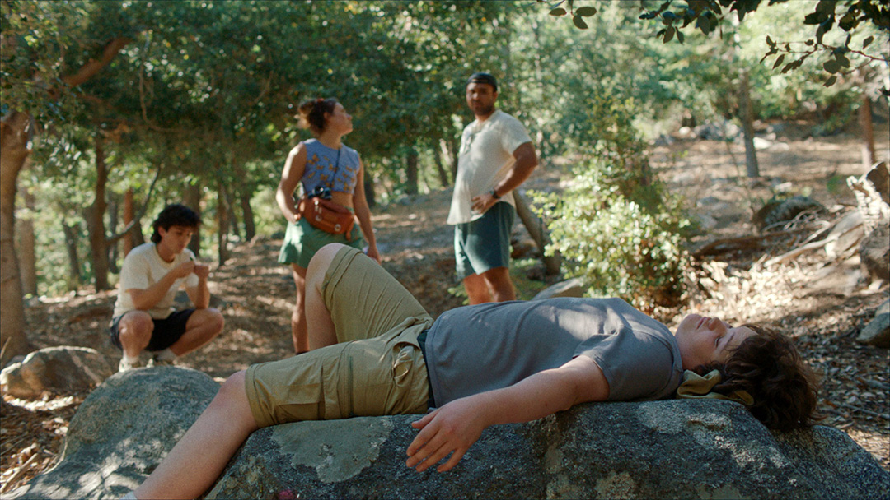
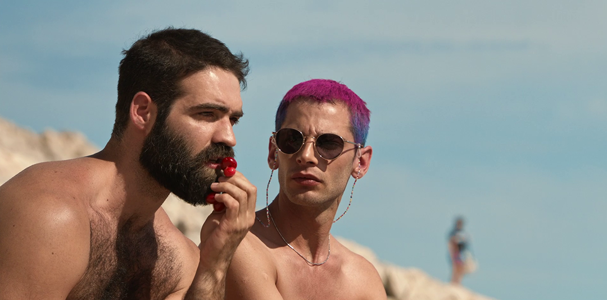

Cafe Au GAZE
Saturday 3rd August

Location TBC | 11:30
Join us on Saturday, Sunday and Monday mornings of the festival for Café au GAZE, where we will invite attending artists, filmmakers and industry professionals of the festival to talk about their practice and to share behind-the-scenes stories from their work. Each morning will be hosted by a local LGBTQIA filmmaker and Festival Director Greg Thorpe. This series is not to be missed by the artists, the film lovers and those of us who love to hear the gossip
Big Boys
Saturday 3rd August

Light House Cinema | Screen 2 | 13:00
Dir. Corey Sherman / USA / 2024 / 1hr 30m
You will smile, you will cry, you will laugh, you will dance in your seat - you will fall in love with Big Boys. Corey Sherman’s coming of age tale is simply one of the most lovable, smart, and authentic gay comedies in years. Excited 14-year-old Jamie heads out for a camping weekend with his pain-in-the-ass brother Will and their cool beloved older cousin Allie. While Will tries to cajole Jamie to double date the girls from the campsite, Jamie has become oddly transfixed by Allie’s kind, handsome, and bear-ish boyfriend, Dan. A confusing and supremely awkward trip unfolds as Jamie grapples with this newfound attraction and the realisation it hints at. The clumsiness of teenage desire hits perfectly home throughout this film. The script is a dream and this is most definitely a story where audiences laugh with the fat queer kid, not at them. The central performance by Isaac Krasner as a completely adorable Jamie needs all of the trophies.
Writer: Corey Sherman
Producers: Connor Capetillo, Corey Sherman, Allison Tate
Pre Feature Short: Concrete Heart
Enrika Panero / France / 2023 / 20m
Kenza, a secretive teenager, takes part in a rap workshop with a young queer rapper, awakening both talent and desire.
Writers: Valérie Leroy, Florent Sauze
Producers: Karine Blanc, Michel Tavares, Nathalie Landais
Ursa Minor Shorts
Presented By aemi
Saturday 3rd August 2024
Light House Cinema | Screen 3 | 13:10
1hr 8m + in-conversation
A constellation of films that move in and out of relationships with each other, Ursa Minor is this year's selection of
artist and experimental film brought together by aemi for GAZE. Bound up with each other through shifting ideas of landscape,
death, and stardom, the works in this programme from Colm Higgins, Jennifer Mehigan, P. Staff, Kenneth Anger, and Juana Robles
invoke dream-like states where quotidian practices like getting dressed or making butter assume queer and otherworldly qualities.
Collisions of private and public, material and immaterial proliferate throughout and the pain and suffering endured by the body is
pierced by fleeting moments of pleasure, interspecies kinship and purposeful abandon. aemi is an Arts Council-funded organisation
dedicated to the support and development of artist film in Ireland. For more details visit www.aemi.ie
There will be a post-screening Q&A with the filmmakers.
The Legend of the Dun Cow
Colm Higgins/ Ireland/ 2024/ 19m
A camp and luscious exploration of butter and the sensorial experience of agricultural practice. Combining intense documentary
footage with tableaus and original music, the film is a playful take on the place of the cow in the Irish consciousness.
Directed by: Colm Higgins
Honeysuckle Joyride
Jennifer Mehigan/ Ireland/ 2022/ 13m
Honeysuckle Joyride is a commissioned video essay made in response to Bassam Al-Sabah's show I AM ERROR which opened at
Gasworks London in 2021. The essay considers themes of decay, inter-species kinship and the Irish landscape through a
post-humanist lens. Footage of various locations around the island are layered with computer-generated imagery, uncovering
personal or domestic materialities of queerness, grief and horror as they intersect with the screen, and ideas of truth and
reality in a space where public and private spheres are constantly colliding with and abstracting each other.
Directed by: Jennifer Mehigan
Hevn
P. Staff/ UK/ 2022/ 5m
Combining digital and analogue filmmaking techniques with poetry, hand-painted animation and industrial sound, Hevn explores
pleasure and pain in sick or debilitated bodies, with Staff's ongoing interest in the volatility of queer and trans bodies.
Glimpses of footage—a shower scene, traffic, friends gathering—are obscured and revealed by layers of hand painted film and
lettering, eventually giving way to a titular poem that asks what happens to us in states of dreaming, volatility, inebriation
and exhaustion.
Directed by: P. Staff
Puce Moment
Kenneth Anger/ US/ 1949/ 6m
Made over a decade before the original publication of his notorious Hollywood Babylon, underground filmmaker Kenneth Anger
produced this short film, intending it to form part of a longer project. Starring Yvonne Marquis, the film follows her around
her apartment as she gets dressed and ends just before she goes out to walk her four Borzoi dogs. Shot in colour in the late
1940s and featuring a psychedelic folk rock soundtrack from the 1960s, this is an uncanny invocation of decadence and decline.
Directed by: Kenneth Anger
Alicia
Juana Robles/ Ireland/ 2024/ 25m
Originally shot on Super 8mm film and partially blown up to 16mm for the creation of collages made up of abstract and composed
photograms, the film explores in a medium-specific way the self-experimental search for artistic, gender and sexual identity of
Zurich-based movement artist/teacher and former architect Toma Alice Péronnet (they, them, theirs).
Directed by: Juana Robles
Scala!!!
Or, the Incredibly Strange Rise and Fall of the World's Wildest Cinema and How It Influenced a Mixed-up Generation of Weirdos and Misfits
Irish Film Institute | Cinema 2 | 13:10
Dirs. Ali Catterall, Jane Giles / UK / 2023 / 1hr 36m
A must-see for lovers of underground cinema, queer culture, the bizarre, and the renegade. Pre-gentrification King's Cross, London. The Scala
cinema stands as a forlorn reminder of the neighbourhood's former glory. But it is soon to be adopted by a new generation of avant-garde cinephiles,
clubbers, visionaries, and the capital's cultural mavericks. From Eraserhead to Pink Flamingos, all night gore-fests to queer clubbing extravaganzas,
The Scala had it all. Jane Giles and Ali Catterall's brilliant cut 'n' paste visual style pays tribute to all the mess and magic of the iconic Scala.
John Waters, Adam Buxton, and Paul Burston join the many talking heads remembering the Scala's heyday, while Dublin ex-pat Rory Perkins recalls turning
London clubbing on its head under the Scala's roof and one night even turning Madonna away... Long live the Scala!
Writers: Ali Catterall, Jane Giles
Producers: Alan Marke, Jim Reid, Andrew Starke
Pre Feature Short: Robert & Georgie
Clare Richards / UK / 2024 / 16m
Robert George Sanders, a fashion design graduate from Central St Martins, is on a journey to define himself artistically while
resisting labels. The film delves into Robert's exploration of his identity amidst personal and familial challenges, turning to
his art for solace.
Producer: Carla Grande
Break The Game
Feature + Q&A
Saturday 3rd August
Light House Cinema | Screen 3 | 15:30
Dir. Jane M. Wagner / USA / 2023 / 1hr 20m
After coming out as trans, record-breaking video game speedrunner Narcissa Wright saw her massive fanbase
turn against her. Beginning in 2017, when Narcissa makes a return to speedrunning, this documentary sets us on
the path of the classic underdog story before shattering our expectations completely. Edited from hundreds of
hours of real Twitch footage interwoven with original 8-bit animations, Break The Game is an unflinching portrait
of life lived online, capturing the heartwarming highs and terrifying lows of one woman caught between the cruel
attention of the internet and the tenderness of love offline.
There will be a post-screening discussion after the film.
Writer: Jane M. Wagner
Producers: Jane M. Wagner, Stephanie Andreou, Jonathon Norcross, Matthew Makar
Pre Feature Short: Alexx196 & the pink sand beach
Loïc Hobi / France / 2023 / 24m
Internet friends Alex and Sacha are devastated by the closing of the online video game they met in-so when Alex and his mother go on vacation near
Sacha's home, the two teenagers try their best to finally meet IRL.
Writer: Loïc Hobi
Producers: Flavien Giorda, Yann Gonzalez, Consuelo Frauenfelder, Stefan Lauper, Loïc Hobi
The Queen of My Dreams
Saturday 3rd August
Irish Film Institute | Cinema 1 | 15:30
Dir. Fawzia Mirza / Canada / 2023 / 1hr 35m
Director Fawzia Mirza presents The Queen of My Dreams, a vivid comic drama about rich family history and the journey
of migration that contrasts the timelines of two coming of age tales - one a young Muslim woman in Pakistan, the other
her future lesbian daughter growing up in Canada. Mariam and daughter Azra share an obsession with Bollywood fantasy,
and the colour and music of that world filter throughout this sumptuous timeslip adventure. They might seem worlds apart
but family bonds are strong and memory is a journey home. This is a clever, joyful, and colourful tribute to iconic mothers
and gay daughters, to the world of Bollywood, and to mutual loving acceptance.
In proud partnership with Queer Spectrum Film Festival.
Writer: Fawzia Mirza
Producers: Jason Levangie, Andria Wilson, Marc Tetreault
Pre Feature Short: The Lime Green Shirt
Kaushik Ray / UK / 2024 / 16m
Saraswati, a lonely widow and Bengali immigrant living in northern England, re-enters her estranged son's life.
When the consequences of her conservative parenting come to light, Saraswati discovers she must set aside her own
fears to save their relationship.
Writer: Kaushik Ray
Producers: Kaushik Ray, Pooja Chauhan, Neeraj Churi
The Summer with Carmen
Saturday 3rd August

Light House Cinema | Screen 1 | 18:00
Dir. Zacharias Mavroeidis
Greece / 2023 / 1hr 46m
'Impossibly handsome Greek men hanging out at the naked gay beach' is the short version of this movie blurb, but in fact,
The Summer with Carmen is also a clever treatise on the tribulations of queer filmmaking, dating, and break-ups, and platonic
gay friendship.
Demosthenes (Yorgos Tsiantoulas) plays the perfectly sculpted sexy single hunk drifting through his days of hook-ups, hangouts,
and dog-sitting. Whilst having philosophical chats on the hot beach with his filmmaker pal Nikitas (Andreas Labropoulos), the friends
recount the trials of the previous summer that will soon form the film plot for Nikitas' feature debut.
This meta-fiction approach to the film creates a playfully narcissistic self-reflection befitting an ancient Greek drama and riffing
on a familiar type of gay self-obsession with very charming results. Funny, original, and oh so hot, pour yourself a drink and get your
flights booked for The Summer With Carmen.
Writers: Fondas Chalatsis, Zacharias Mavroeidis
Producer: Ioanna Bolomyti
Pre Feature Short: The Pansy of Pickadee
Angus George, Paddy Morahan / Australia / 2023 / 8m
The Dressmaker star Roy Barker narrates this bittersweet line-drawn animation that celebrates a brave queer hero while indulging the love of saucy rhyming couplets.
Rivière
Saturday 3rd August
Irish Film Institute | Cinema 1 | 18:00
Dir. Hugues Hariche / Switzerland, France / 2023 / 1hr 44m
Manon Rivière (Flavie Delangle) is seventeen years old, angry, abandoned, and a true star of the ice hockey rink.
In search of her absent father Franck, she ups sticks from her Alpine village and heads off to the town where she believes
her dad to be living. In these unfamiliar and unsettling new surroundings, Manon discovers a second family abandoned by Franck,
and a local all-male ice hockey team who are willing to take her on as a player.
As she holds her own amongst her teammates, Manon falls for a beautiful chaotic local figure skater who is battling her own demons
and has her own dreams to rise to the top. The relationship between the two girls is full of the hopes, hurt, and ambitions of youth.
This is a fearless, tactile coming-of-age drama with big dreams and a heart of gold.
Writers: Joanne Giger, Hugues Hariche
Producers: Adrian Blaser, Alice Bégon, Aline Schmid
Pre Feature Short: Unnamed
Iranmehr Salimi / Iran / 2023 / 13m
Sepehr is a star volleyball player overcoming many challenges as a trans man, but his gender transition hits a new obstacle when he is
unable to match male volleyball requirements in Iran, jeopardising his career and the financial support he brings his family.
Writer: Iranmehr Salimi, Zahra Jesmai
Producer: Iranmehr Salimi
Unreal Shorts
Saturday 3rd August 2024
Light House Cinema | Screen 3 | 18:15
1hr 45m
In a budding GAZE tradition, the genre-busting gender benders of queer cinema take us once again to the furthest reaches of queer
imagination in this selection of short films spanning high camp fantasy to low budget horror. A morbid streak runs through this magical
melange with themes of death, resurrection, and transformation reigning supreme; queer lovers bid ghostly goodbyes, corpses commune with
unlikely allies, and an undead trans femme sex worker brings total vengeful mayhem.
From the folkloric dancefloor to the séance table, take our hand and don't let go—who knows where these films might take you...
Passiflora
Gabriel Souza Nunes/ Canada/ 2023/ 14m
In a modern retelling of Brazilian folklore, Theo nervously ventures into a fantastical party, only to be shaken out of his insecurities after
a passionfruit cocktail takes him on a magical adventure to find true love.
Written by: Carolyn Woolner, Gabriel Souza Nunes
Produced by: Aries Ceta, Elaine Yan
im in love with edgar allan poe
Andrea A. Walter/ USA/ 2023/ 13m
Two baby goths prepare to summon the ghost of Edgar Allan Poe, but a series of unexpected obstacles jeopardize the entire spooky
spectacle, and maybe even their friendship.
Written by: Andrea A. Walter
Produced by: Bianca Catbagan, Lou Wang-Holborn
Their Universe
Jeong-gil HAN/ South Korea/ 2023/ 17m
A year after passing away, Jun returns to Earth as a ghost to say goodbye to his boyfriend.
Written by: Jeong-gil HAN
Produced by: Chang-hwan PARK, Han-bum KIM
Sole
Ana Berdeja/ Mexico/ 2024/ 15m
As an embalmer dreams up dialogue with a teenage trans boy she's been told to put in a dress, she struggles to honour the dead without wounding his grieving family.
Written by: Ana Berdeja
Produced by: Jose Manuel Mijares, Rafael Macazaga, Allan Feder
there's a light
Elisa Beli Borrelli/ Ireland/ 2023/ 5m
Abandoned in an unfamiliar place, a lonely partygoer teeters on the edge of an all-consuming, reality-warping breakdown.
Written and Produced by: Elisa Beli Borrelli
BLEACH
Daniel Daniel/ United Kingdom/ 2023/ 19m
Wracked with both shame and desire, Lloyd spirals down a Grindr-fuelled descent into total self-annihilation.
Written by: Alfie Flewitt
Produced by: Matthew Pieterse
The Journey Home
Noah Lei Underwood/ UK/ 2024/ 3m
In two parallel worlds of light and darkness, a liberated trans man enjoys a lush idyll while a creature is warped out of shape by its bindings.
Written by: Noah Lei Underwood
Transition to Death
Nate Newman/ Vietnam/ 2024/ 20m
With the help of a strange witch and an armoury of deadly sex toys, an undead trans stripper seeks gory, grindhouse revenge.
Written by: Jayna Young, Nate Newman
Desire Lines
Saturday 3rd August
Irish Film Institute | Cinema 1 | 20:40
Dir. Jules Rosskam / USA / 2024 / 1hr 21m
Hands down the sexiest, queerest opening sequence of any film in this year's festival, Desire Lines tells the eye-opening,
heart-opening, shirt-opening stories of gay men who are trans and trans guys coming out as gay. Mixing documentary and interviews,
the film follows a beary Iranian American man, Ahmad (Aden Hakimi), who seems to fall through time via his days spent inside a queer
historical archive. Ahmad gradually begins to understand his sexuality and assert his identity when the archive doubles as a mythical
gay bathhouse, opening up past and present in a genuinely erotic journey of discovery. At the heart of the film is the figure of Lou
Sullivan, the gay trans man who pioneered sexual and HIV healthcare, visibility and pride for his community.
Seen through documentary interviews alongside contemporary trans men and trans masc voices, the result is one of the most formally
inventive queer films of the past decade. Keep your history sexy.
Writers: Jules Rosskam, Nate Gualtieri
Producers: Amy E. Powell, André Pérez, Brittani Ward
Pre Feature Short: Skin
Leo Behrens / USA / 2023 / 7m
With the help of their inner manifestation, the ice man, the protagonist sheds their old skin and embraces their true identity.
Writer: Leo Behrens
Producer: Ilayda Cetinkaya
She is Conann
Saturday 3rd August
Light House Cinema | Screen 3 | 20:45
Dir. Bertrand Mandico
France / 2023 / 1hr 45m
This epic lesbian retelling of Conan the Barbarian sees Conann ascend from slavery to supremacy through a wild array of
eras and aesthetics, always stalked by the butch hellhound Rainer, surrounded by fantastical violence, and pursuing her
captor-turned-lover Sanja.
With incredible maximalist visual flair surrounding the violence and sensuality of Conann's six lives, She is Conann is a
one-of-a-kind experimental gay odyssey taking us to the brink of queer film as we know it, and then mercilessly throwing us
over the edge.
Writer: Bertrand Mandico
Producers: Avi Amar, Gilles Chanial, Emmanuel Chaumet
Pre Feature Short: éabha
Moritz Kramer / Germany / 2023 / 9m
In the middle of a hiking date, Ciarán suddenly experiences regressions to a past life as a woman in intensifying torment visions
he may not escape if he cannot find catharsis for his past self.
Writer: Moritz Kramer
Producer: Aisling Keogh
Breakthrough Shorts
Saturday 3rd August 2024
Irish Film Institute | Cinema 2 | 20:50
1hr 24m
Queer visionaries shaping tomorrow's cinema. Eight films that dare to shatter cinematic norms with flair and style, as we see bold content
meet experimental form. Playful yet profound, a collection that honours the fearless creativity of filmmakers who break the mould, paving
the way for visionary stories that redefine queer cinema.
A Bird Called Memory
Leonardo Martinelli/ Brazil/ 2023/ 15m
Memory has lost its way back home. Lua, a trans woman, sets out through the bustling city streets to reunite with Memory, but the journey proves challenging. A delightful exploration that seamlessly weaves together various mediums and themes.
Written by: Leonardo Martinelli
Produced by: Rafael Manuel
Scaffold
Billy Klotsa/ UK/ 2023/11m
Fragments of bereavement and collapsing love appear in an isolated house between the land and the sea.
Death arrives. The landscape shivers. What holds us close in moments of rupture?
Produced by: Luke W Moody
Ripe!
Tusk/ US/ 2024/ 18m
A story that relishes in the enticing subtlety and inexplicable magnitude of gestures, echoing the feelings of confusion that unexpected love and attraction can evoke. The director aptly describes it: “Nothing says ‘it’s complicated’ quite like breaking your crush’s arm.”
Written and Produced by: Tusk, Cookie Walukas
The Secret Lives of Lesbian Cats
Kate Jessop/ United Kingdom/ 2023/ 2m
Ever wonder what cats get up to when their lesbian owners aren't around? An enchanting animation that might leave you nervously laughing.
Written and Produced by: Kate Jessop
Vapor Trails
Willow Skye-Biggs/ US/ 2023/ 11m
Two trans-lesbian lovers find hope and self-acceptance through abstract storytelling and immersive visuals, exploring love, identity, and visibility in a poignant journey.
Written and Produced by: Willow Skye-Biggs
School Birds
Quentin Corker-Marin, Felix Marring-ton-Reeve/ UK/ 2023/ 6m
Inspired by Section 28, a burnt-out trans school teacher finds liberation through dance, facing pressures of conformity while seeking acceptance from himself and others.
Written and Produced by: Quentin Corker-Marin, Connor Wakefield
What are you looking for?
Iqran Rasheed/ Portugal/ 2023/ 15m
Deepak navigates queer dating and seeks genuine connection amidst superficial modern culture, breaking cinematic walls between actor, viewer, and director.
Written by: Iqran Rasheed
Produced by: Victor Candias
We Collide
Jason Bradbury/ United Kingdom/ 2023/ 2m
A split screen queercore romance - a visceral and immersive exploration of the power of the mosh pit and finding love in the most unlikely of places.
Written by: Jason Bradbury
Produced by: Cheri Darbon
Lake Burst by MaÏa Nunes
Clodagh Farrelly/ Ireland/ 2023/ 15m
Three characters seek integration and liberation of the self, drawing on global mythologies to explore spirit versus flesh, willpower, seduction, resistance, and surrender.
Written by: MaÏa Nunes
Produced by: MaÏa Nunes, Clodagh Farrelly